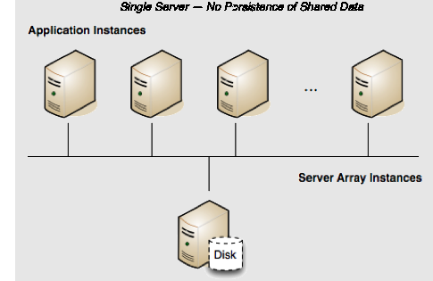

Terracotta Cluster in Development
Persistence: No | Failover: No | Scale: No
In a development environment, persisting shared data is often unnecessary and even inconvenient. Running a single-server Terracotta cluster without persistence is a good solution for creating an efficient development environment.
By default, a Terracotta server has Fast Restartability (FRS) disabled, which means it will not persist data after a restart. Its configuration could look like the following:
<?xml version="1.0" encoding="UTF-8" ?>
<tc:tc-config xmlns:tc="http://www.terracotta.org/config"
xmlns:xsi="http://www.w3.org/2001/XMLSchema-instance"
xsi:schemaLocation="http://www.terracotta.org/schema/terracotta-9.xsd">
<servers>
<server name="Server1">
<data>/opt/terracotta/server1-data</data>
<tsa-port>9510</tsa-port>
<jmx-port>9520</jmx-port>
<tsa-group-port>9530</tsa-group-port>
<management-port>9540</management-port>
<dataStorage size="4g">
<offheap size="4g"/>
</dataStorage>
</server>
</servers>
...
</tc:tc-config>
If this server goes down, the application state (all clustered data) in the shared memory is lost. In addition, when the server is up again, all clients must be restarted to rejoin the cluster. Note that servers are required to run with off-heap, and that shared data is also lost.
 Contact Support
|
Community
|
Feedback
Contact Support
|
Community
|
Feedback